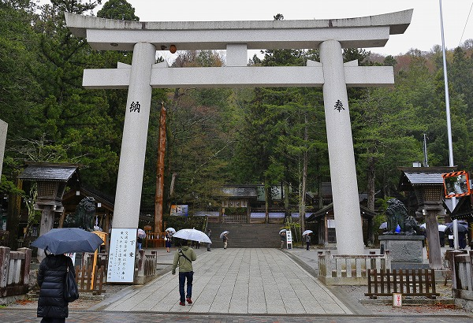

御頭祭/長野県
御頭祭、という中々ショッキングな祭りがある。
何と鹿の頭を神様に捧げる祭りなのだ（いや、それだけじゃないけど）。
場所は長野県の諏訪大社。
ご存知の方も多かろうが、諏訪大社、といってもこの神社は4カ所に別れている。
上社本宮、上社前宮、下社秋宮、下社春宮の4社。
諏訪大社の信仰の特異性は話すと長くなるのでここでは割愛させていただくが、御頭祭はこの4社の内、上社本宮と上社前宮で行われる。
諏訪大社の祭神は建御名方神。
戦に敗れ出雲の国から諏訪に来たといわれるチョットかわいそうな神さまだ。
しかし武神として信仰を集め、今では農業神、商業神としても篤く信仰されている。
で、土産物屋などがたくさん並ぶ上社本宮に行ってみる。

上社本宮は本宮というだけあって諏訪大社のセンター的役割を担っている。
土産物屋が並ぶ参道を抜けると大きな鳥居がそびえている。
その向こうには奇祭、御柱祭でお馴染みの御柱が見える。
この柱は一の柱と呼ばれており、同じような柱が他にも3本、拝殿を囲むように建っている。
もっとも、あまりにも境内が広大なので三の柱、四の柱はどこにあるのかすら良く判りませんでした…。
ちなみに諏訪では神社の社殿はほぼ例外なく4本の柱に囲まれている。路傍の小さな社であっても、だ。
あいにくの雨の中、祭りが始まろうとしている。
神職が祭りの行われる斎庭に向かっている。
一般の見物客が入れるのはこの門まで。
拝殿前の斎庭には氏子の方々と思しき方々が神妙な面持ちで座っている。
斎庭の先には拝殿が見える。
この上社本宮には拝殿のみで本殿というものがない。なぜならこの拝殿の右奥に位置する神体山という山自体が本尊になっているからなのだ。
拝殿に次々と供物が運び込まれていく。
お目当ての鹿の生首は確認できなかった。恐らくこの祭りの後半部、上社前宮で登場すると思われる。
神職が祝詞を唱え、参列者が玉串を奉納し、まずは祭りの前半戦が終了。
この後、舞台は1.5キロほど東にある上社前宮へと移ることになる。
上社本宮から上社前宮への渡御までしばし時間があるので本宮と前宮の間にある神長官守矢史料館に行ってみることにした。
この史料館は以前にも来たことがある。
建築探偵でお馴染みの藤森照信氏が設計したユニークな建物だ。
諏訪神社上社の神官の神長官を務めてきた守矢家に伝わる文書等を展示する施設である。
しかし一番インパクトのある展示はこちら。
壁一面に鹿と猪の頭がかけられているいるのだ！
かつての御頭祭はこのように大量の鹿や猪の生首を神前に奉納したそうな。
鹿の頭75を俎に乗せて神前に供す（風俗画報、明治30年）
桃鹿猪の頭七十五頭（信濃奇勝録、明治20年）
また江戸時代にはサザエや蛸なども江戸から仕入れて神饌として供えたという。
他にも多くの魚、鳥、獣を山積みにして神に捧げた。
そしてその後、人々と神が共にその肉を食らい酒を飲んだのだとか。
神と人が一体になって饗宴を行うわけだ。
75頭鹿を供えると必ず一頭は耳の裂けた鹿がいたという。御頭祭あるあるだそうで。
かつては兎も供えられていた。
お尻から頭にぶっすりと串刺しに。
かわいそうとしか思えないが、肉を食うという事はこういう事なのだ。
肉だけではない。
中には猪の頭皮の焼きものや鹿肉と脳味噌のあえものなどといった呪術的な食物（？）もある。
サナギ鈴、ミシャグジ神の鈴。
ミシャグジ神はこの地方で信仰されている謎の神様で、諏訪大社はその信仰の中心地でもあるのだ。
御贄柱。
これは今でも祭りに登場する柱だが、かつてはこの柱に子供を縛り付け打ち殺したともいわれている。
子供はおこう（御神）と呼ばれ赤い着物を身に着けたという。
一方で打ち殺した真似をしただけ、という説もある。
古老の話ではおこうは神職の子供を選ばなければならないのだが、乞食の子供を代わりに縛ったとか。妙にリアルだな。
真偽のほどは定かではないが、ありとあらゆる生き物を捧げる祭りゆえ人間が生贄にされてもおかしくはない、のかもしれない…。
さて、いよいよ渡御行列の時間である。
再び上社本宮に戻ると神職をはじめ、大勢の人々が上社本宮から1.5キロほど離れた上社前宮に向かって出発するところだった。
特徴的な鎌を持っている。
この鎌は薙鎌といい、ある意味諏訪大社を象徴する鎌である。
御柱祭に先立ち山の中で諏訪大社まで運ぶ木を選定するのだが、その際にこの鎌を木に刺す事で神木となるのだという。
昔、夏みかんを剥く時に使った鳥型の皮むきみたいな形だが、自然の木を神木に変えるマジカルなパワーを持ったアイテムなのだ。
かつて生贄を縛り付けたといわれる御贄柱も担がれて上社前宮に向かう。
神様が乗っているとされる輿が登場。
それにしても皆さんビビッドなお召し物で…。
雨雲は山の向こうに流れ、日が射してきた。
いよいよ渡御のスタートである。
地元の消防団が神様をがっちりガードしている。
薙鎌を持った方も一休み。
それにしても持ち物の種類がたくさんあるなあ。
行列は上社本宮のある諏訪市から上社前宮のある茅野市に入る。
神様は人々が住む俗世を静々と進む。
背景に他意はございません。
そうこうしているうちに渡御行列は上社前宮に到着した。
時間にして1時間ほどの渡御だった。
前宮の十間廊という建物の中に豪快に神輿ごと入っていく。
ここが御頭祭のメイン会場なのだ。
気が付けば十間廊の周囲には観客がビッチリ。
中々ベストポジションを得られず辛うじて中が見える場所に陣取る。
おおお、鹿の首がドーンと供えられているではないか！
まあ、実際には剥製なんですけどね。
外には行列に参加した方々が座り込んでいた。お疲れ様です。
さて、いよいよ御頭祭後半の部である。
鹿の頭を上座に向け神職が祝詞をあげる。
おお、後方にも二頭の鹿が！
合計５頭の鹿の頭が神様に奉納されたことになる。
無事祝詞も終わり、前宮での行事は終了となる。
祢宜さん方が奉納された野菜や果物などを片付け始める。
と、供えられた神饌の中に雉を発見！
コレは剥製ではなくてホンモノ。まあ、綺麗な雉だ。
雉を手にしたオジサンに話を聞くと近くの山中で捕まえた雉だとか。
これから捕まえた山に放しに行くのだ。
オジサン曰く毎年雉はこうして紙にくるまれて三宝に乗せられ奉納されるのだが、神事の最中は決して暴れることはないのだという。不思議。
で、改めて鹿の首を見てみる。
真ん中の鹿は耳が裂けている。うむー。
三体の首の下には真空パックされた鹿肉などが奉納されていた。
見る限り兎の串刺しや猪の皮焼き、脳みそあえなどはなかった模様。
もちろん柱に子供を縛り付けたりもしていなかった。
十間廊から階段上の拝殿にむかって一同が拝礼する。
そしてまた上社本宮に向かって還御の行列が出発する。
背景に他意はないってば。
鹿の首は剥製だったし、兎も猪も生贄もいなかったが、それでも生々しい祭りであった。
祭りの歴史や意味など謎に包まれた部分の多いミステリアスな祭りだが命を神に捧げる意味合いの強い祭りであることは間違いなかろう。
そして古くから狩猟を行ってきたこの地域の人々の生業に根差した祭りであることは深く感じられた。
2018.04.
珍寺大道場 HOME